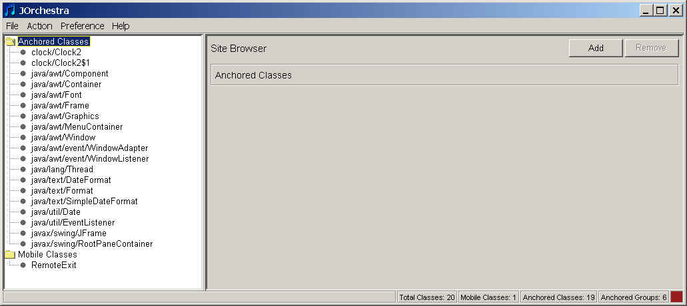
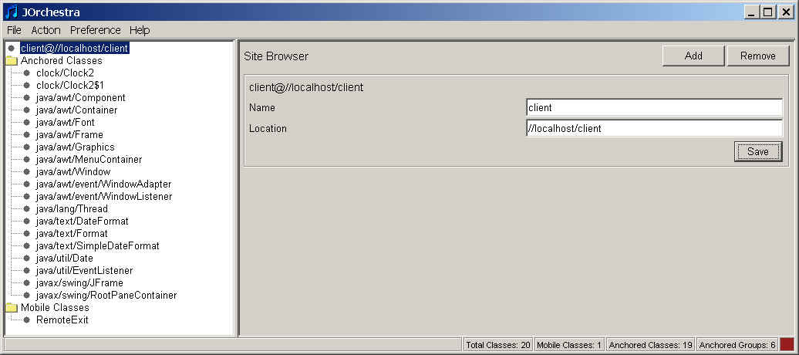
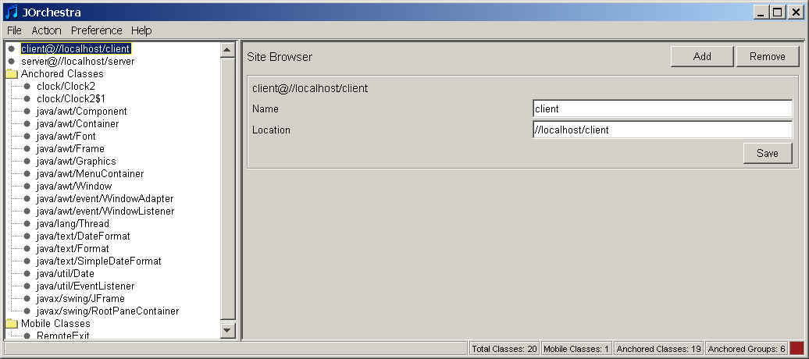
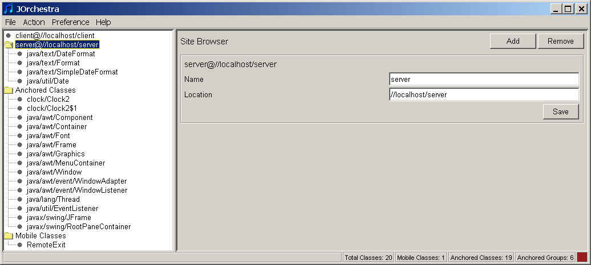
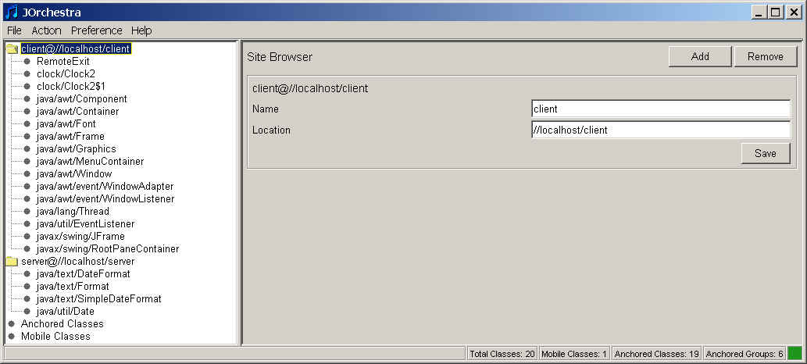
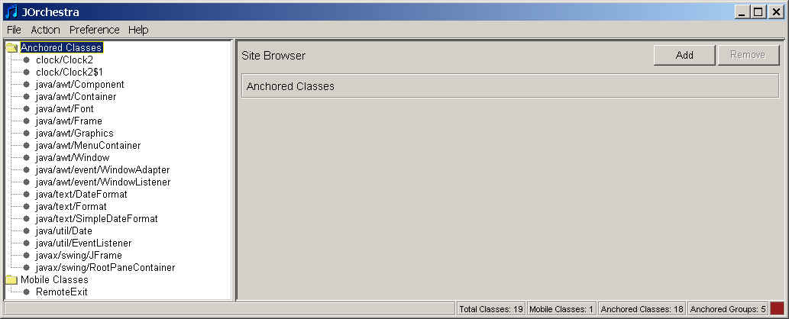

Last Modified: June 12, 2003
It is strongly advised, that you first complete the first part of the
tutorial.
In this part, we will introduce how to partition applications from scratch
using J-Orchestra.
Repeat steps from 1 to 4 from Part I.
1) Choose File/Import menu option and then click on "Add" button
in "Select Directories" dialog.
Select the root directory of the clock example.
2) J-Orchestra will import the clock application files.

3) Click the "Add" button. Enter "client" in the
"Name" field and enter "//localhost/client" in the
"Location" field. Then click
the "Save" button.

4) Follow the same steps as in step 3) to enter the info for the
"server" site.

5) Now select the anchored group of classes containing java/util/Date and
drag-n-drop it to the "server" folder.

6) Drag-n-drop the rest of the classes to the "client" folder.

7) Now repeat steps 6 to 13 in Part I of the tutorial.
Notice that java/lang/Thread is a referenced system class. However, in this distribution scenario we are interested in partitioning the threading functionality. In other words, we would like to ignore java/lang/Thread.
To accomplish that, create .ignore file containing a single line java.lang.Thread
and place the file to the base directory of the example and import
classes again. java/lang/Thread should not appear in the list of imported
classes.


Last Modified:
June 12, 2003